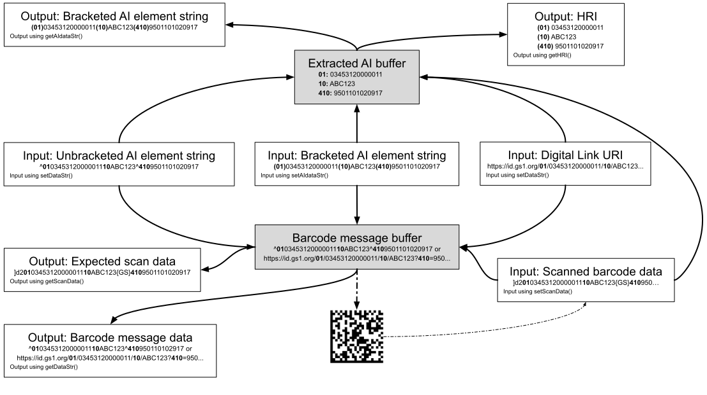

View on GitHub
View on GitHub Install in Dash
Install in DashGS1 Barcode Syntax Engine - Swift Package
The GS1 Barcode Syntax Engine provides routines that support the processing of GS1 syntax data, including Application Identifier element strings and GS1 Digital Link URIs, whether these are provided in raw or human-friendly format or as normalised scan data received from barcode readers.
The implementations are intended for use with GS1 standards and applications and do not contain additional features that might be required for more general use.
Within the GS1 Application Identifier system, structured data is represented in different formats depending upon the context.
The data formats supported by this library are:
- Bracketed AI element strings: Human-friendly rendition of AI data as a single string using numerical AIs.
- Unbracketed AI element strings: Rendition of AI data that corresponds most directly to encoded barcode data.
- GS1 Digital Link URIs
- Scan data: The expected result of scanning a symbol with a barcode reader that has AIM symbologies identifiers enabled.
- Human Readable Interpretation (HRI): Human-friendly redition of the AI data contained within a symbol. This may also include Data Titles to present the AI data in the form of “mixed HRI/non-HRI text”. (Output only.)
The following diagram shows how the library can be used for processing and transformation of GS1 data, indicating which formats are accepted as input, how barcode message data is generated and AI data extracted from the provided input data, and how the given data can be output in various formats.

The above diagram highlights that conceptually the library contains two internal “data buffers”:
- Barcode message buffer: This is populated with the raw message that would be borne by a GS1 barcode symbol that represents the input data, e.g. unbracketed AI syntax with FNC1 in first for regular AI element strings; plain string for a plain data or a GS1 Digital Link URI.
- Extracted AI buffer: This contains the in-order AI data that was extracted from the input data.
The main operations of the library involve reading and updating the state of these buffers.
Quick start
Building the Swift Package
To build the package:
cd src/swift
swift build
To build for release:
swift build -c release
Running the Example Application
After building, you can test it by running the interactive example application:
swift run Example
Or to see the version:
swift run Example --version
The example application provides an interactive menu for testing different input formats and features.
Using in Your Own Project
To use the wrapper in your Swift project, add it as a dependency in your Package.swift:
dependencies: [
.package(path: "<path-to-gs1-syntax-engine>/src/swift")
]
Then add it to your target:
targets: [
.target(
name: "MyApp",
dependencies: ["GS1Encoders"]
)
]
For a minimal example, create a main.swift file as follows:
import GS1Encoders
do {
let gs = try GS1Encoder()
print("GS1 Syntax Engine version: \(gs.getVersion())")
gs.free()
} catch {
print("Error: \(error)")
}
Build and run:
swift run
For a comprehensive example, see Example.swift.
iOS Mobile App Quick Start
To use the GS1 Barcode Syntax Engine in an iOS application:
Create a new iOS App project in Xcode (File → New → Project → iOS → App)
Add the Swift package as a local dependency:
- In Xcode, select File → Add Package Dependencies…
- Click “Add Local…” button at the bottom
- Navigate to and select the
gs1-syntax-engine/src/swiftdirectory - Click “Add Package”
- In the dialog, ensure “GS1Encoders” is selected and click “Add Package”
In your SwiftUI view or view controller, import and use the library:
import SwiftUI
import GS1Encoders
struct ContentView: View {
@State private var version = ""
var body: some View {
VStack {
Text("GS1 Encoders Library")
.font(.title)
Text("Version: \(version)")
.padding()
}
.onAppear {
do {
let gs = try GS1Encoder()
version = gs.getVersion()
gs.free()
} catch {
version = "Error: \(error)"
}
}
}
}
For a UIKit-based app:
import UIKit
import GS1Encoders
class ViewController: UIViewController {
override func viewDidLoad() {
super.viewDidLoad()
do {
let gs = try GS1Encoder()
title = "GS1 Encoders library: \(gs.getVersion())"
// Use gs to process barcode data...
gs.free()
} catch {
print("Error: \(error)")
}
}
}
For a comprehensive iOS app example with barcode scanning and full UI, see the GS1 Encoders iOS App.
Example uses
The following are examples of how to use the library.
Unless otherwise specified, the getter methods return library-managed data that must not be modified by the user. If their content must persist following a subsequent call to the same instance of the library then they must be copied to a user-managed variable.
Most of the setter and action methods of this library throw exceptions in the event of failure. Production code should catch these exceptions and handle them appropriately, which might include rendering the error message to the user.
GS1 AI data validation and extraction (including GS1 Digital Link)
The following code processes AI data input, validates it (reporting any failures) and displays the extracted AIs if the validation succeeds.
let gs = try! GS1Encoder() // Create a new instance of the library
defer { gs.free() }
// gs.setPermitUnknownAIs(true) // Uncomment only if it is necessary to handle AIs
// that are not known to the library
// Input provided as a bracketed AI element string
//
do {
try gs.setAIdataStr("(01)12312312312333(10)ABC123(99)TEST")
} catch GS1EncoderError.parameterError(let msg) {
print("ERROR: \(msg)") // Display a descriptive error message
let errMarkup = gs.getErrMarkup()
if !errMarkup.isEmpty { // Display the invalid AI in the case of a Linting failure
print("Bad AI data: \(errMarkup)")
}
// Finally, handle the error in an application-specific way
exit(1)
} catch {
print("ERROR: \(error)")
exit(1)
}
// Alternatively, the input may be given in the following formats:
//
// try gs.setDataStr("^011231231231233310ABC123^99TEST") // Unbracketed element string, "^" = FNC1
//
// try gs.setDataStr("https://example.com/01/12312312312333/10/ABC123?99=TEST") // GS1 Digital Link URI
//
// try gs.setScanData("]Q1011231231231233310ABC123\u{001D}99TEST") // Barcode scan data, containing a "GS" (ASCII 0x1D) separator
for line in gs.getHRI() { // Display the extracted AI data as HRI text
print(line)
}
Converting an AI element string to barcode message data
In this example we process a bracketed AI element string to convert it into barcode message data, suitable for carrying in a GS1 barcode symbol.
let gs = try! GS1Encoder()
defer { gs.free() }
do {
try gs.setAIdataStr("(01)12312312312333(10)ABC123(99)TEST") // Accept a bracketed AI element string
} catch {
// Handle error and return
}
print(gs.getDataStr()) // Render the barcode message buffer
Note: The barcode message data read and emitted by this library uses a harmonised format that does not concern itself with internal encoding quirks of various symbologies. In the harmonised barcode message data:
- A leading
"^"always indicates GS1 Application Identifier syntax data, i.e. a notional FNC1 in first character position. (This is even true for DotCode in whose internal encoding the literal FNC1 non-data character may have an inverted meaning for certain messages depending upon their regular data content.) - A
"^"at any other position represents a notional FNC1 non-data Application Identifier separator character. (This is even the case for QR Code in whose internal encoding a"%"character or"{GS}"character takes on the AI separator role typically assigned to the FNC1 non-data character, depending upon the effectuve encodation mode.)
Additionally, barcode image encoder libraries have differing conventions for how to input FNC1 characters, extending to whether it is necessary to be explicit about the notional FNC1 character in the first position when specifying a GS1 Application Identifier syntax symbol.
Consequently, the barcode message data emitted by this library may need to be post-processed to align to the specific requirements of whatever symbol generation library is in use.
Barcode scan data processing
In this example we process scan data from a barcode reader to extract the AI data.
let gs = try! GS1Encoder()
defer { gs.free() }
// Disable validation of mandatory association between AIs if the symbol may
// be one of multiple on a label
try! gs.setValidationEnabled(validation: .RequisiteAIs, enabled: false)
do {
try gs.setScanData("]Q1011231231231233310ABC123\u{001D}99TEST")
} catch {
// Handle error and return
}
for line in gs.getHRI() {
print(line)
}
// If it is necessary to know the "symbology" that was scanned then this can
// be read using getSym(), however note the caveats given in the
// description of setScanData()
Note: It is required that AIM Symbology Identifiers are enabled on the barcode reader, and that the scanned barcode message “survives the channel” intact, i.e. that no character substitutions have been made by the reader, in particular that any embedded FNC1 separator characters are correctly represented by GS characters (ASCII 29). If this is not the case then the scanned data should be pre-processed to meet this requirement.